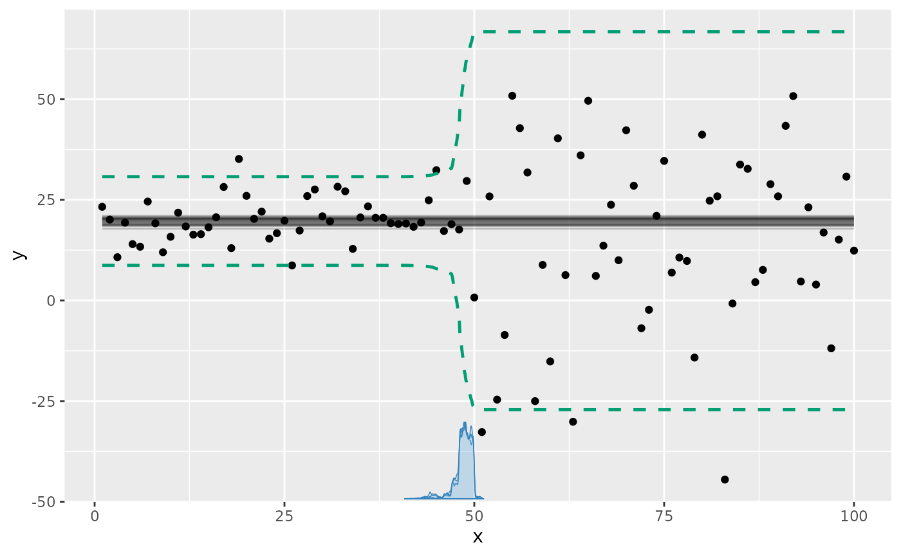
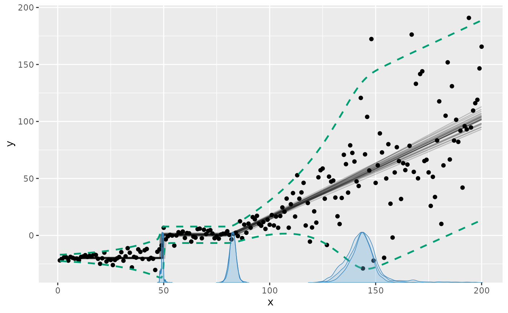
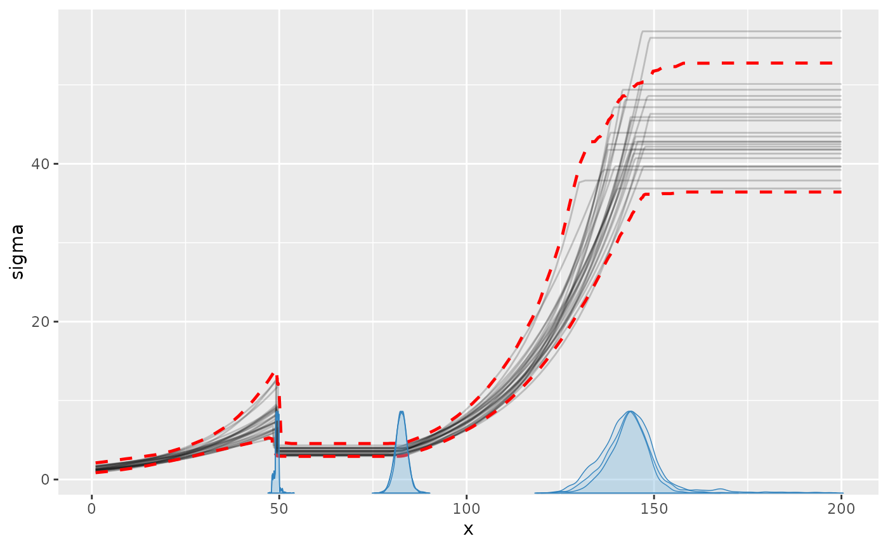
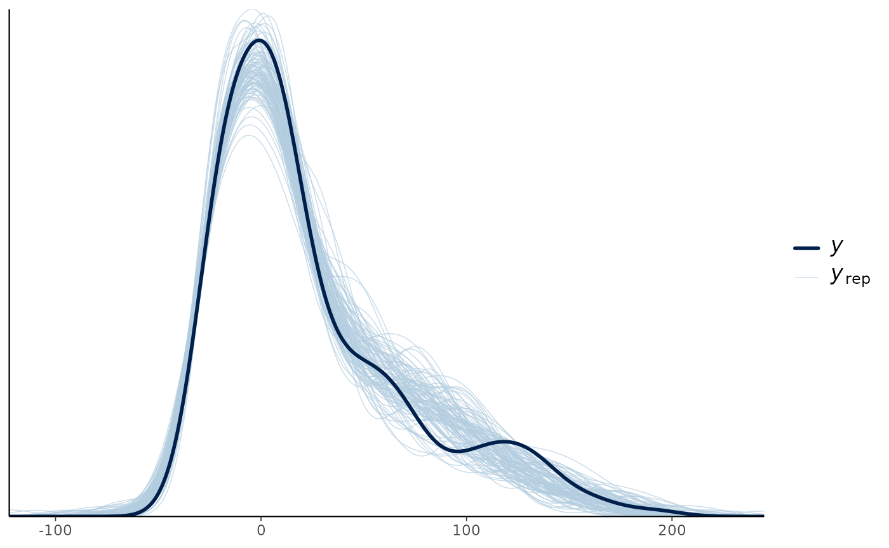
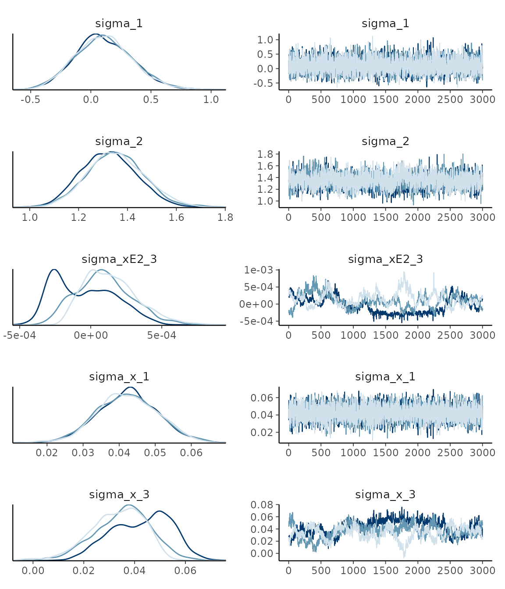
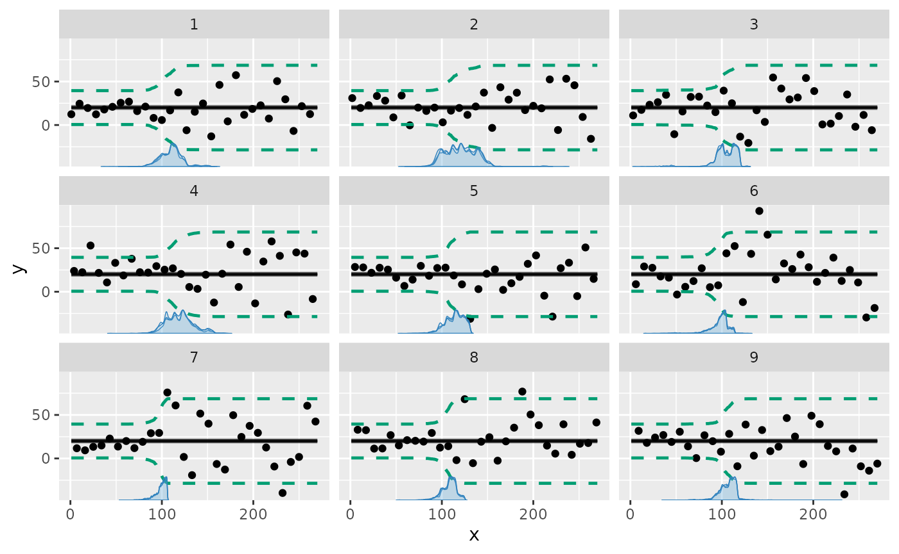
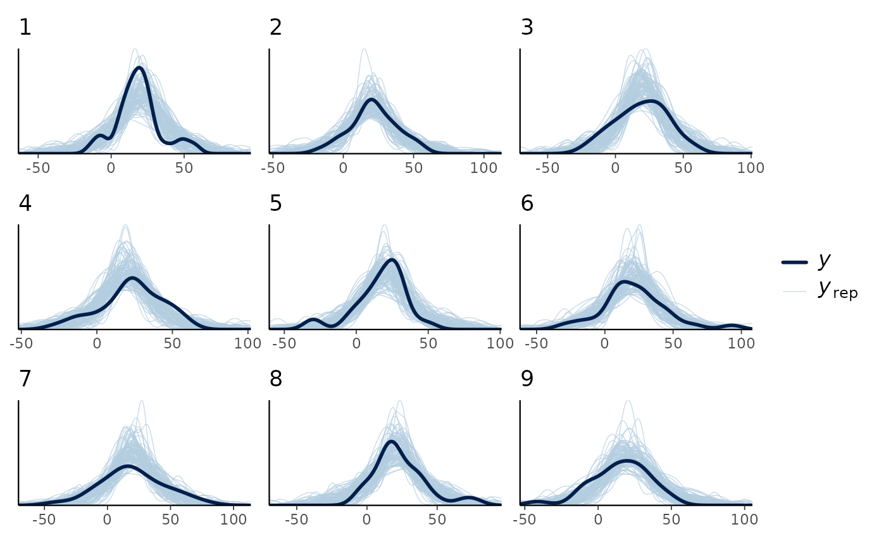

Variance change points and other distributional parameters
2026-10-25
Source:vignettes/dpar.Rmd
dpar.Rmdmcp supports distributional regression,
where any parameter of a response distribution can be regressed on
predictors and have change points across segments. In standard
regression, formulas model only the conditional mean mu(),
where the expected response on the response scale relates to the linear
predictor via link function g(\mu_i) =
\eta_i (\mu_i = g^{-1}(\eta_i)).
Distributional regression extends this by allowing formulas for
distributional parameters such as residual standard deviation
(sigma), negative-binomial overdispersion
(shape) - and auxiliary parameters for time-series
autocorrelation (ar / ma) - on their
respective link scales.
In mcp, a distributional parameter
(dpar) is anything with its own segmented linear
predictor: mu, sigma, shape, and
each AR/MA lag (ar1, ar2, ma1,
…). Strictly, AR/MA lags are not parameters of the response
distribution, but they are modeled the same way. This is what the
dpar argument and column refer to throughout
mcp, e.g., fitted(fit, dpar = "sigma"),
plot_dpar(fit, "ar1"),
fixef(fit, dpar = "ar1"), and
mcp_pars(fit)$dpar.
Here, we exemplify regression on the standard deviation
sigma. A plateau mean with an increasing standard deviation
can be written as y ~ 1 + sigma(1 + x). Read more about mcp
formulas here.
Priors for distributional parameters
Aligning with brms convention, without an explicit
sigma() formula, the default is the intercept-only prior
dt(0, max(2.5, mad(y)), 3) T(0, ) directly on the residual
SD, i.e., an identity link. The response-calibrated
scale adapts to the units of y, with a minimum of 2.5 to
avoid an accidentally narrow prior.
With an explicit sigma() formula, the intercept instead
defaults to dt(0, 2.5, 3) on log-SD, as in
brms. Contrasts use the same prior, and slopes are scaled
by the predictor’s SD, dt(0, 2.5 / sd(column), 3). Read more.
Simple example: a change in standard deviation
Let us model a simple change in residual standard deviation with a plateau mean:
library(mcp)
future::plan(future::multisession, workers = 3)
model = list(
y ~ 1, # sigma(1) is implicit in the first segment
~ 0 + sigma(1) # a new intercept on sigma, but not on the mean
)We can simulate data with an abrupt change from a low to a high residual standard deviation at x = 50:
df = data.frame(x = 1:100, y = 1)
empty = mcp(model, data = df, sample = FALSE, par_x = "x")
df$y = empty$simulate(
empty, df,
cp_1 = 50, Intercept_1 = 20,
sigma_Intercept_1 = log(5), sigma_Intercept_2 = log(20))
head(df)## x y
## 1 1 23.26959
## 2 2 20.09526
## 3 3 10.75248
## 4 4 19.33618
## 5 5 14.00591
## 6 6 13.35129Now we fit the model to the simulated data.
fit = mcp(model, data = df, par_x = "x")We plot a posterior predictive interval to show the effect of the changing standard deviation, which is not immediately visible in the default plot of the expected response:
plot(fit, interval = "predict")
We can see all parameters are well recovered (compare
sim to mean) despite poor rhat
and ESS. Like the other parameters, the sigma coefficients
are named after the segment where they are included. There will always
be a sigma_Intercept_1 because sigma is
required by the likelihood.
summary(fit)## Family: gaussian
## Links: mu = identity; sigma = log
## Draws: 9000 (3 chains with iter = 3000)
## Segments:
## 1: y ~ 1
## 2: ~ 0 + sigma(1)
##
## Change point parameters:
## parameter mean sd lower upper rhat ess_bulk ess_tail sim match
## cp_1 48.6 1.2 44.7 50.0 1.00 2380 795 50.0 OK
##
## Population-level parameters:
## parameter mean sd lower upper rhat ess_bulk ess_tail sim match
## Intercept_1 19.75 0.77 18.25 21.29 1.00 8093 8386 20.00 OK
## sigma_Intercept_1 1.70 0.11 1.49 1.92 1.00 4749 4707 1.61 OK
## sigma_Intercept_2 3.156 0.099 2.971 3.358 1.00 5444 4697 2.996 OKAdvanced example
We can model changes in sigma alone or together with
changes in the mean. The following deliberately complex model
demonstrates that flexibility:
model = list(
# 1. Increasing standard deviation.
y ~ 1 + sigma(1 + x), # Intercept_1, sigma_Intercept_1, sigma_x_1
# 2. Abrupt change in mean and standard deviation.
~ 1 + sigma(1), # At cp_1: Intercept_2, sigma_Intercept_2
# 3. Joined slope on mean; log-SD changes as a second-order polynomial.
~ 0 + x + sigma(0 + x + I(x^2)), # At cp_2: x_3, sigma_x_3, sigma_xE2_3
# 4. Continue slope on mean, but plateau standard deviation (no sigma() term).
~ 0 + same(x) # At cp_3: reuse x_3; sigma joined
)Notice a few things here:
-
same(x)ensures that the mean slope remains constant between segment 3 and 4. So onlysigmachanges there. Reusing the slope effectively removes the change point in the mean (read more about formulas in mcp). - Segment 4:
sigmais required by the likelihood, so it cannot be turned off. A segment that does not includesigma()is joined, so the log-SD plateaus here.
In general, the log-SD parameters are named
sigma_[normalname], where “normalname” is the usual
parameter names in mcp (see more here). For example, the log-SD
intercept in segment 2 is sigma_Intercept_2 and the log-SD
slope on x in segment 3 is sigma_x_3. In
models without sigma(), the residual SD itself is simply
sigma_1.
Simulate data
We simulate some data from this model, setting all parameters. As
always, we can make an empty fit (sample = FALSE) to get
fit$simulate, which is useful for simulation and
predictions from this model.
# Set up model
df = data.frame(x = 1:200, y = 1)
empty = mcp(model, data = df, sample = FALSE)
# Simulate data
df$y = empty$simulate(
empty, df,
cp_1 = 50, cp_2 = 80, cp_3 = 140,
Intercept_1 = -20, Intercept_2 = 0,
sigma_Intercept_1 = log(1), sigma_x_1 = log(2) / 15,
sigma_Intercept_2 = log(4),
sigma_x_3 = 0.03,
sigma_xE2_3 = 0.00015,
x_3 = 0.8
)Fit it and inspect results
Fit it:
fit = mcp(model, data = df, diagnostics = FALSE)Plotting a posterior predictive interval is an intuitive way to see how the residual standard deviation is estimated:
plot(fit, interval = "predict")
We can also plot sigma itself using
plot_dpar(). Now the y-axis is the residual SD:
plot_dpar(fit, dpar = "sigma", interval = "fitted")
summary(fit) shows that the parameters are well
recovered and a posterior predictive check (pp_check(fit))
looks good too. The last change point is estimated with greater
uncertainty than the others because its only signal is a stop in
standard-deviation growth.
summary(fit)## Family: gaussian
## Links: mu = identity; sigma = log
## Draws: 9000 (3 chains with iter = 3000)
## Segments:
## 1: y ~ 1 + sigma(1 + x)
## 2: ~ 1 + sigma(1)
## 3: ~ 0 + x + sigma(0 + x + I(x^2))
## 4: ~ 0 + same(x)
##
## Change point parameters:
## parameter mean sd lower upper rhat ess_bulk ess_tail sim match
## cp_1 49.36 0.56 48.13 50.42 1.00 3290 2903 50.00 OK
## cp_2 82.6 1.6 79.3 85.7 1.00 2653 3564 80.0 OK
## cp_3 143.4 7.2 130.5 158.0 1.05 74 105 140.0 OK
##
## Population-level parameters:
## parameter mean sd lower upper rhat ess_bulk ess_tail sim match
## Intercept_1 -19.74 0.38 -20.48 -18.95 1.00 7479 7912 -20.00 OK
## Intercept_2 0.58 0.63 -0.67 1.82 1.00 4927 6198 0.00 OK
## x_3 0.861 0.058 0.749 0.974 1.00 5747 7346 0.800 OK
## sigma_Intercept_1 0.22 0.22 -0.19 0.69 1.00 4477 4873 0.00 OK
## sigma_x_1 0.0388 0.0079 0.0234 0.0543 1.00 4101 4972 0.0462 OK
## sigma_Intercept_2 1.28 0.12 1.07 1.52 1.01 1378 3438 1.39 OK
## sigma_x_3 0.0425 0.0094 0.0222 0.0609 1.09 28 66 0.0300 OK
## sigma_xE2_3 -0.00000 0.00018 -0.00033 0.00047 1.11 25 52 0.00015 OK
pp_check(fit)
The low ESS for sigma in segment 3 reveals some unidentifiability
concerning whether the variance increase is driven by a linear
(sigma_x_3) or quadratic term (sigma_xE2_3).
This spills over to a lower ESS for cp_3 too. Other
coefficients seem to be reasonably recovered. This is why I set
diagnostics = FALSE to quiet warnings since this is just a
demonstration.
Let us verify this by taking a look at the posteriors and trace. For now, we just look at the sigmas:
plot_pars(fit, regex_pars = "sigma_")
This confirms the impression from rhat,
ess_bulk, and ess_tail. Read more about tips, tricks, and debugging.
JAGS code for distributional parameters
Printing the underlying JAGS code, you can see that the regression
model is the same for the mean mu (see under “# Formula for
mu”) and the standard deviation sigma (see under “# Formula
for sigma”).
This is explained more in Understanding mcp formulas.
fit$jags_code## model {
## # Change points
## cp_0 = min(x)
## cp_1 ~ dunif(cp_0, cp_4) # Flat Dirichlet on the segment lengths
## cp_2 ~ dunif(cp_0, cp_4) # Flat Dirichlet on the segment lengths
## cp_3 ~ dunif(cp_0, cp_4) # Flat Dirichlet on the segment lengths
## cp_4 = max(x)
## cp_order_ ~ dbern(step(cp_2 - cp_1) * step(cp_3 - cp_2)) # Ordered change points
##
## # Priors for population-level effects
## Intercept_1 ~ dnorm(26.268121747257734, 1/(118.97849793160449)^2) # Mean intercept (rstanarm default)
## Intercept_2 ~ dnorm(26.268121747257734, 1/(118.97849793160449)^2) # Mean intercept (rstanarm default)
## x_3_end_ ~ dnorm(Intercept_2, 1/(2.055635353724206*(cp_3-cp_2))^2) # Autoscaled mean coefficient (rstanarm default); sampled as the value at the segment end
## x_3 = (x_3_end_ - (Intercept_2)) / (cp_3 - cp_2)
## sigma_Intercept_1_mid_ ~ dt(-sigma_x_1 * 1 + sigma_x_1 * (25.875), 1/(2.5)^2, 3) # Weakly regularizing modeled log-SD intercept; on the value at min(x); sampled as the value at the expected midpoint of segment 1
## sigma_Intercept_1 = sigma_Intercept_1_mid_ - (sigma_x_1 * (25.875))
## sigma_x_1 ~ dt(0, 1/(0.043193421279068007)^2, 3) # Regularizing log-SD coefficient scaled by the predictor SD
## sigma_Intercept_2 ~ dt(0, 1/(2.5)^2, 3) # Weakly regularizing modeled log-SD intercept
## sigma_x_3_end_ ~ dt(sigma_Intercept_2, 1/(0.043193421279068007*(cp_3-cp_2))^2, 3) # Regularizing log-SD coefficient scaled by the predictor SD; sampled as the value at the segment end
## sigma_x_3 = (sigma_x_3_end_ - (sigma_Intercept_2)) / (cp_3 - cp_2)
## sigma_xE2_3_rise_ ~ dt(0, 1/(0.0002100945749551876*(cp_3-cp_2)^2)^2, 3) # Regularizing log-SD coefficient scaled by the predictor SD; sampled as the rise over the segment
## sigma_xE2_3 = sigma_xE2_3_rise_ / (cp_3 - cp_2)^2
##
## # Model and likelihood
## for (i_ in 1:length(x)) {
## # x measured from each segment's change point
## x_local_1_[i_] = min(x[i_], cp_1)
## x_local_2_[i_] = min(x[i_], cp_2) - cp_1
## x_local_3_[i_] = min(x[i_], cp_3) - cp_2
## x_local_4_[i_] = min(x[i_], cp_4) - cp_3
##
## # Formula for mu
## link_mu_[i_] =
## (x[i_] >= cp_0) * (x[i_] < cp_1) * inprod(rhs_matrix_[i_, c(1)], c(Intercept_1)) * 1 +
## (x[i_] >= cp_1) * inprod(rhs_matrix_[i_, c(2)], c(Intercept_2)) * 1 +
## (x[i_] >= cp_2) * inprod(rhs_matrix_[i_, c(3)], c(x_3)) * x_local_3_[i_] +
## (x[i_] >= cp_3) * inprod(rhs_matrix_[i_, c(4)], c(x_3)) * x_local_4_[i_]
##
## # Formula for sigma
## link_sigma_[i_] =
## (x[i_] >= cp_0) * (x[i_] < cp_1) * inprod(rhs_matrix_[i_, c(5)], c(sigma_Intercept_1)) * 1 +
## (x[i_] >= cp_0) * (x[i_] < cp_1) * inprod(rhs_matrix_[i_, c(6)], c(sigma_x_1)) * x_local_1_[i_] +
## (x[i_] >= cp_1) * inprod(rhs_matrix_[i_, c(7)], c(sigma_Intercept_2)) * 1 +
## (x[i_] >= cp_2) * inprod(rhs_matrix_[i_, c(8)], c(sigma_x_3)) * x_local_3_[i_] +
## (x[i_] >= cp_2) * inprod(rhs_matrix_[i_, c(9)], c(sigma_xE2_3)) * x_local_3_[i_]^2
##
## # Likelihood for family = gaussian()
## mu_[i_] = link_mu_[i_]
## sigma_[i_] = max(1e-05, exp(link_sigma_[i_]))
## y[i_] ~ dnorm(mu_[i_], 1 / sigma_[i_]^2)
## }
## }Group-level change points and standard deviation
The standard-deviation model also applies with group-level
change-point deviations. Here we model a by-person change in
sigma on a flat mean.
model = list(
# intercept mean. sigma(1) is implicit in first segment if not specified
y ~ 1,
# Changed standard deviation, with a group-level change point.
~ cp((1|id)) + 0 + sigma(1)
)Simulate data:
# Set up model
df = data.frame(
x = 1:270,
id = rep(1:9, times = 30),
y = 1
)
empty = mcp(model, data = df, par_x = "x", sample = FALSE)
# Simulate data
df$y = empty$simulate(
empty, df,
cp_1 = 130, cp_1_id_sd = 40,
Intercept_1 = 20,
sigma_Intercept_1 = log(10), sigma_Intercept_2 = log(25))Fit it:
fit = mcp(model, data = df, par_x = "x")Plot it:
plot(fit, interval = "predict", facet_by = "id")
As usual, we can get the group-specific change points using
coef(fit), or their deviations from cp_1 using
ranef(fit):
coef(fit)## # A tibble: 9 × 12
## parameter group_col level mean sd lower upper rhat ess_bulk ess_tail sim match
## <chr> <chr> <chr> <dbl> <dbl> <dbl> <dbl> <dbl> <dbl> <dbl> <dbl> <chr>
## 1 cp_1 id 1 137. 13.6 106. 156. 1.00 2383 3561 148. OK
## 2 cp_1 id 2 173. 27.2 122. 222. 1.00 877 2080 167. OK
## 3 cp_1 id 3 113. 10.2 90.7 128. 1.00 1107 813 119. OK
## 4 cp_1 id 4 137. 21.0 103. 180. 1.00 1893 3376 124. OK
## 5 cp_1 id 5 155. 15.0 121. 175. 1.00 1679 2596 149. OK
## 6 cp_1 id 6 159. 23.1 109. 211. 1.00 1043 1320 165. OK
## 7 cp_1 id 7 128. 13.4 97.2 143. 1.00 2461 2247 107. OK
## 8 cp_1 id 8 131. 11.2 104. 143. 1.00 2262 3118 131. OK
## 9 cp_1 id 9 125. 22.1 72.8 163. 1.00 1211 1223 122. OK… and verify via posterior predictive checks:
pp_check(fit, facet_by = "id")
Generalizing to other distributional parameters (dpars)
sigma is just one instance of a distributional parameter
in mcp. In general, every response family defines a set of
supported dpars (distributional parameters). The default
linear predictor in any segment formula models the location parameter
mu (or probability/rate under the family’s link function).
Other dpars can be regressed on predictors or given change
points using wrapper functions named after the dpar.
Here is an overview of standard distributional parameters across response families:
-
mu: Conditional mean or location (e.g. mean forgaussian(), success probability forbinomial(), event rate forpoisson()). Modeled by default without any wrapper. -
sigma: Residual standard deviation forgaussian()(modeled on the log-SD scale viasigma(...)). -
shape: Overdispersion / shape parameter fornegbinomial()(modeled on the log-shape scale viashape(...)). -
ar()/ma(): Autoregressive and moving-average serial dependence terms for time-series models (read more here). Each lag is a dpar namedar1,ar2,ma1, etc. (see the definition above).
Inspecting and working with dpars
You can inspect the parameters of a model using
mcp_pars(fit) and their priors using
prior_summary(fit).
Many core mcp functions take a dpar
argument to extract or visualize specific distributional parameters:
-
fitted(fit, dpar = "sigma")orfitted(fit, dpar = "shape"): Returns fitted values for the targetdparevaluated on the response scale. -
plot_dpar(fit, dpar = "sigma")orplot_dpar(fit, dpar = "shape"): Plots the distributional parameter along the change-point variable, optionally with a central interval (interval = "fitted").